Ngô Nguyệt Anh - ULIS 2026
Mã Sinh Viên
25040011
Chuyên Ngành
Sư phạm Tiếng Anh
Sinh viên Khoa Sư phạm Tiếng Anh ✦
Hiện tại em đang theo học ngành Sư phạm Tiếng Anh tại Trường Đại học Ngoại ngữ (ULIS - VNU). Trong quá trình học tập, em dành nhiều sự quan tâm cho các phương pháp phân tích ngôn ngữ học và nghiên cứu đối chiếu ngữ pháp Anh - Việt. Việc làm quen với các công cụ số đã giúp em hệ thống hóa khối lượng tài liệu nghiên cứu này một cách khoa học và chặt chẽ hơn.
Mục tiêu học tập & Định hướng cá nhân: Em mong muốn trở thành một nhà giáo dục có chuyên môn vững vàng và độ nhạy bén cao với công nghệ. Mục tiêu của em là ứng dụng hiệu quả Trí tuệ nhân tạo (AI) và các nền tảng kỹ thuật số để thiết kế bài giảng, đa dạng hóa phương pháp giảng dạy và xây dựng lộ trình học tập mang tính cá nhân hóa cho từng học sinh.
Mục đích thiết lập Portfolio: Trang web này được xây dựng như một "bản lề" ghi nhận lại những bước đi đầu tiên trên hành trình chuyển đổi số của cá nhân em. Đây là nơi lưu trữ các minh chứng thực hành, phản ánh quá trình rèn luyện kỹ năng công nghệ và tư duy ứng dụng AI vào các tác vụ học thuật.
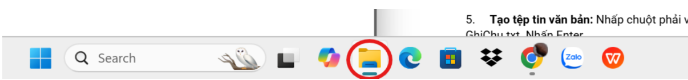
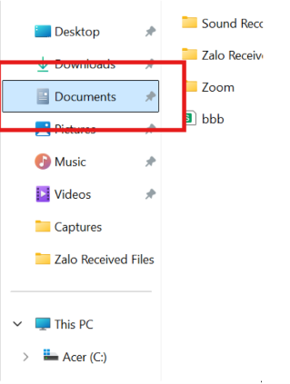
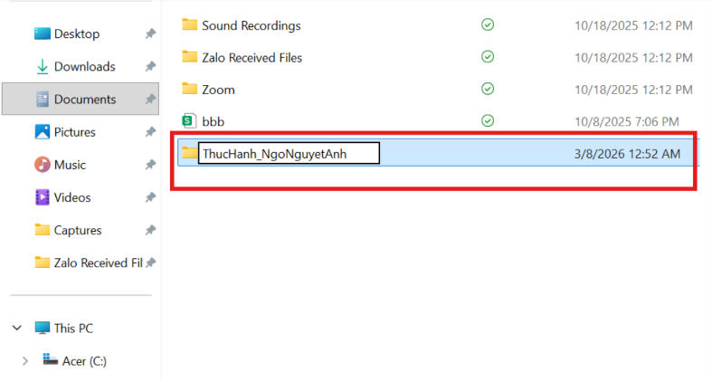
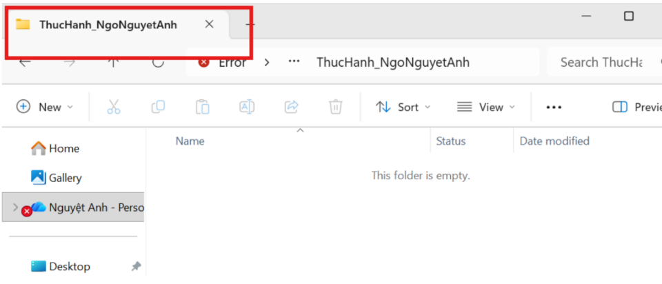
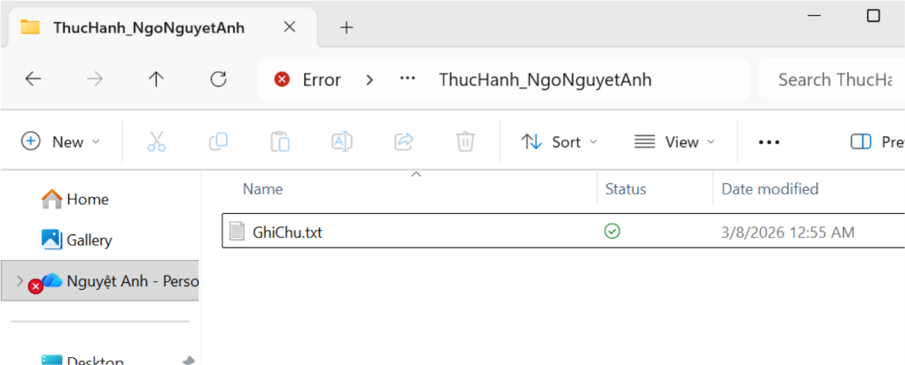
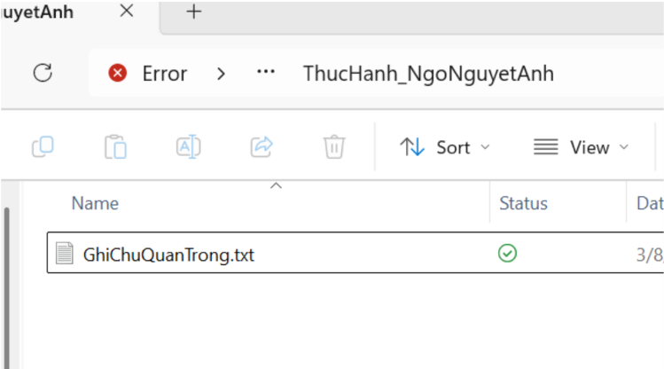
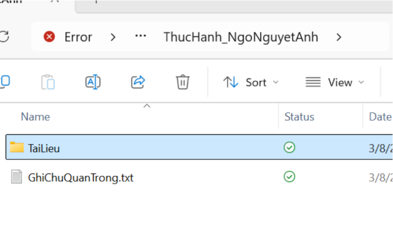
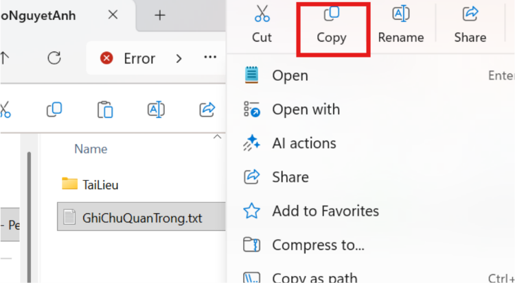
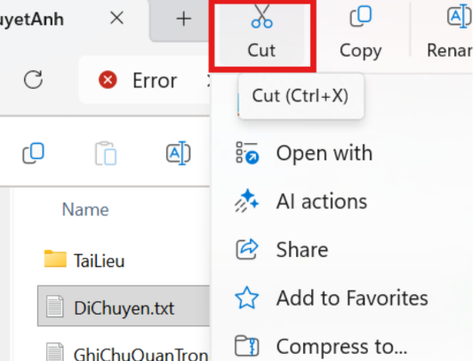
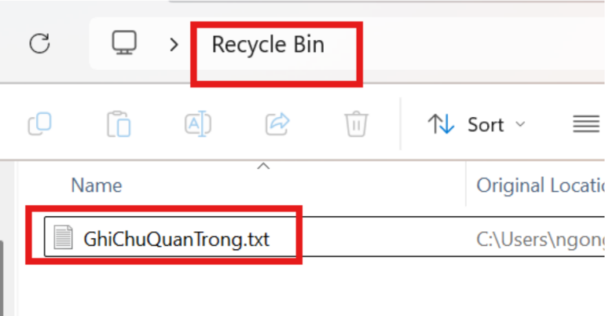
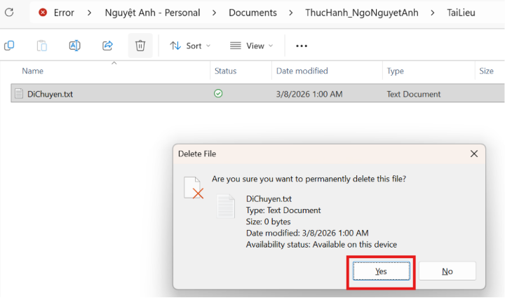
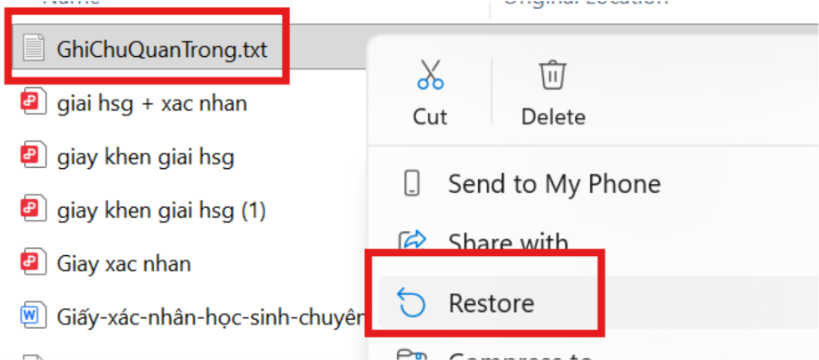
Kết hợp giữa Tạp chí uy tín (hàn lâm) và Báo cáo tổ chức (thực tiễn) giúp báo cáo vừa đảm bảo độ tin cậy vừa bổ sung vấn đề đạo đức.
Khảo sát 3 tác vụ học tập qua 3 cấp độ lệnh (cơ bản, cải tiến, nâng cao) để chứng minh tầm quan trọng của cấu trúc và ngữ cảnh prompt.
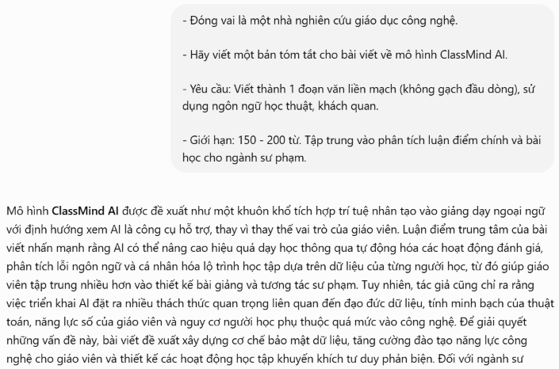
Dự án "Ứng dụng AI trong giáo dục" thực hiện trong 1 tuần. Nhiệm vụ: Lên ý tưởng, biên tập nội dung, làm video hướng dẫn.
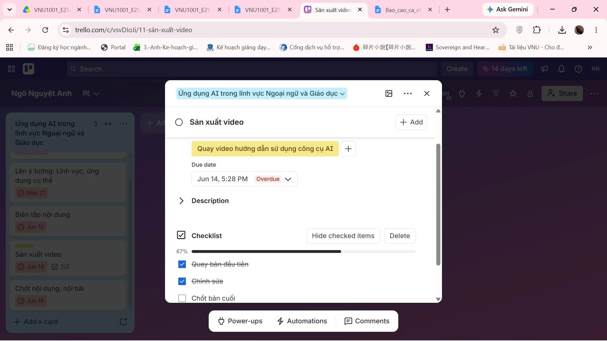
1. Trello: Quản lý tiến độ (To Do - Doing - Done), thiết lập deadline.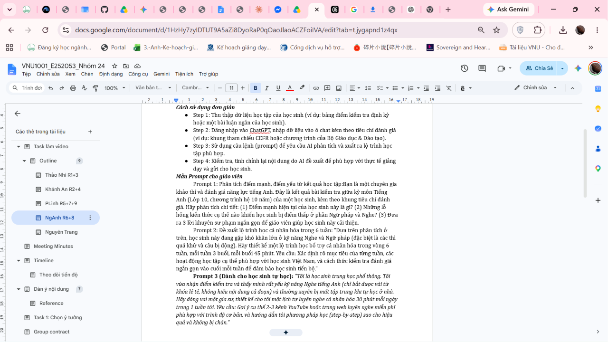
2. Google Docs: Soạn thảo cộng tác, dùng Comment/Suggesting.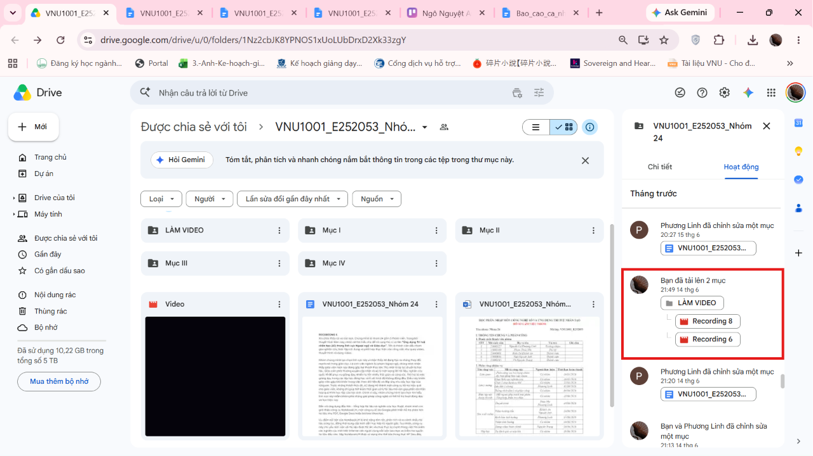
3. Google Drive: Lưu trữ hệ thống, phân quyền an toàn.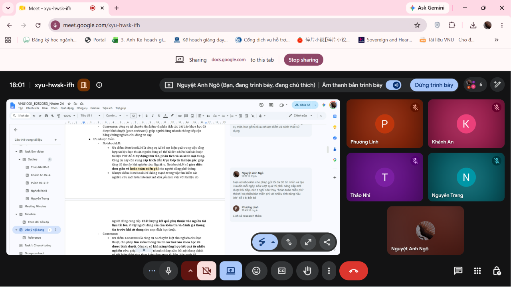
4. Meet/Zalo: Họp nhóm, trao đổi tức thời, chia sẻ màn hình.Nâng cao rõ rệt hiệu suất phối hợp từ xa, nắm bắt tư duy làm việc nhóm kỷ nguyên số.
Thiết kế Infographic mang tính giáo dục: "Sử dụng AI có trách nhiệm trong học thuật" bằng cách phối hợp đa công cụ AI.
AI là trợ thủ tăng tốc sáng tạo, con người là bộ lọc chất lượng và chịu trách nhiệm học thuật cuối cùng.
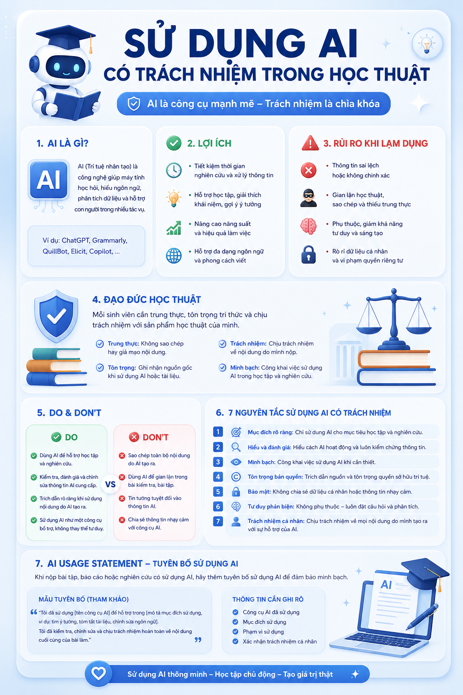
Ứng dụng triệt để chính sách vào dự án Infographic. Trích dẫn đầy đủ "AI Usage Statement" ghi nhận sự hỗ trợ của ChatGPT/DALL-E.
Nhìn lại chặng đường học tập
Việc tự tay hoàn thiện một trang web Portfolio đa tầng từ những mã lệnh đầu tiên là một cột mốc đáng nhớ. Vượt ra khỏi những bài tập lý thuyết trên lớp, em đã thực sự bước vào không gian thực hành, nơi tư duy sư phạm được kết nối chặt chẽ với tư duy hệ thống của công nghệ. Mỗi tệp tin, mỗi thư mục được sắp xếp tại đây đều đánh dấu sự thay đổi rõ rệt trong cách em tiếp nhận, xử lý và trực quan hóa thông tin.
Xuyên suốt dự án, em đã làm chủ được hai bộ kỹ năng quan trọng: Quản trị dữ liệu số khoa học và Nghệ thuật thiết kế câu lệnh (Prompt Engineering). Việc tương tác sâu với các mô hình AI không chỉ giúp em tối ưu hóa thời gian tổng hợp tài liệu chuyên ngành, mà còn rèn luyện khả năng phân rã một vấn đề phức tạp thành các bước xử lý logic, tuần tự.
Điều em tâm đắc nhất là việc nhận ra tiềm năng khổng lồ của công cụ số trong việc hỗ trợ thiết kế tài liệu giảng dạy Tiếng Anh. Tuy nhiên, sự phát triển mạnh mẽ của AI cũng đặt ra bài toán lớn về đạo đức học thuật. Thử thách này đã dạy em cách thiết lập bộ nguyên tắc sử dụng AI có trách nhiệm—biết tận dụng công nghệ để mở rộng ý tưởng, nhưng vẫn kiên định bảo vệ tư duy phản biện và sự liêm chính của cá nhân.
Em xin gửi lời cảm ơn chân thành đến Thầy Cô bộ môn đã luôn tận tâm dẫn dắt, giúp em bước qua rào cản công nghệ để hoàn thiện dự án cá nhân này một cách trọn vẹn.❤️